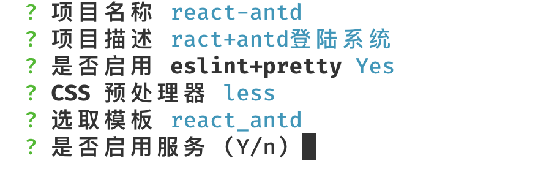
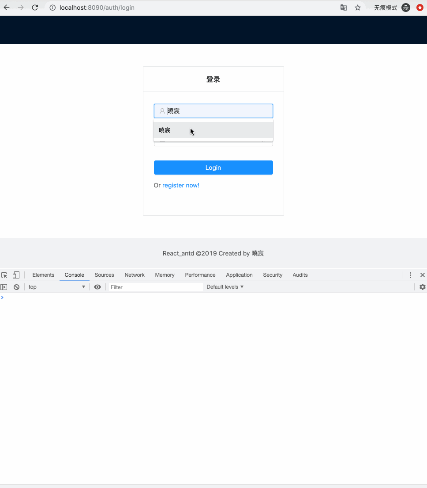
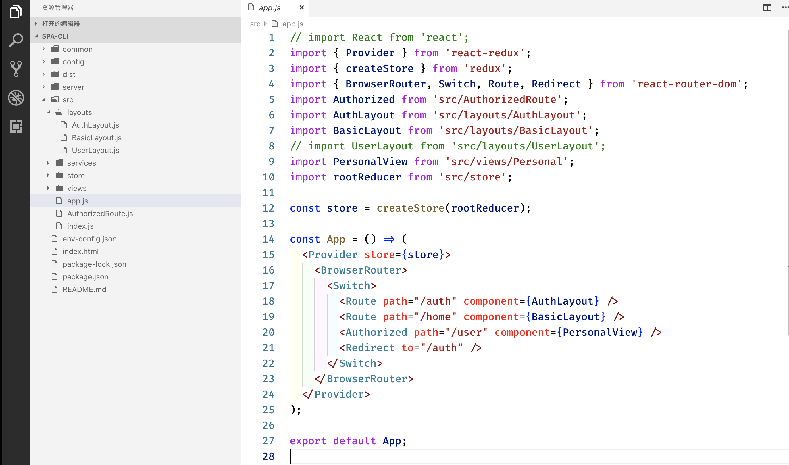
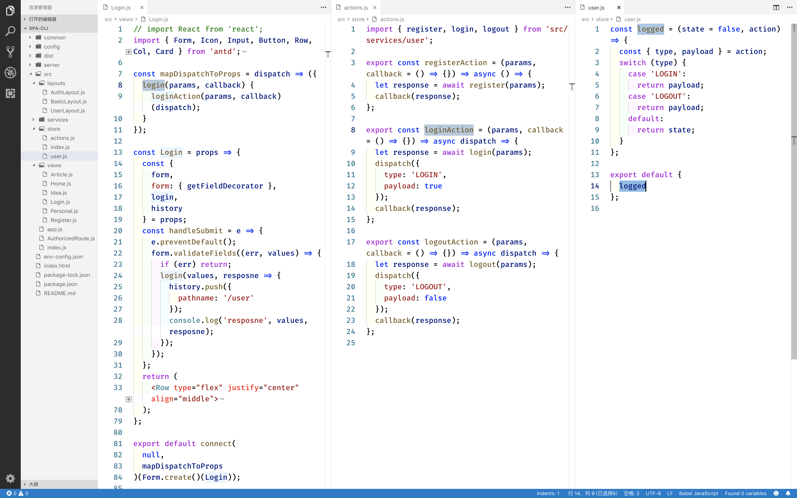
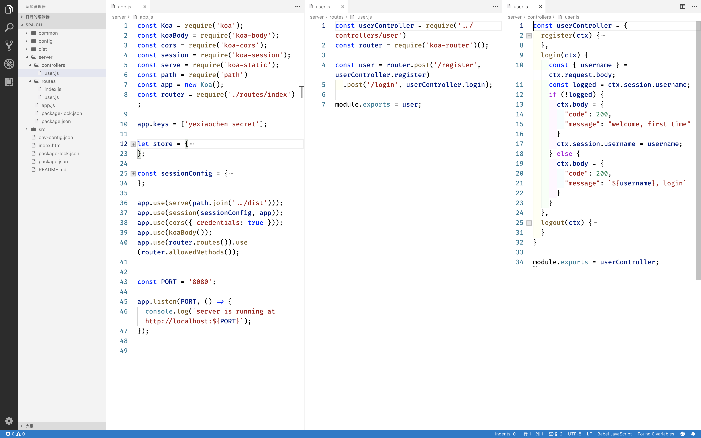

前言
之前的 multi-spa-webpack-cli 只是为 React + antd 模板提供了开发时必要的环境，对于实际的开发并没有什么用处。
为了更贴近实际开发，本次 React + antd 模板完善了一些功能。
- 封装 fetch，新增请求错误提示；
- 集成 react-router-dom 路由管理；
- 集成 react-redux 状态管理；
- 必不可少的 antd 集成；
- node 服务集成（可选）。
node 服务和 React+antd 模板是没有多大的关系的。本文只是想通过一个简单的登陆逻辑来演示以上的功能，所以 node 服务不是必须的。
multi-spa-webpack-cli 已经发布到 npm，只要在 node 环境下安装即可。
1 | npm install multi-spa-webpack-cli -g |
使用步骤如下:
1 | 1. 初始化项目 |

1 |
|
预览：

封装 fetch
现在处理异步的方式，大多数基于 Promise 的。而 fetch 是天然支持 Promise 的，所以无需再手动封装。在 PWA 技术中，已作为一个重要的组成部分在使用。
fetch 为人诟病的缺点之一，就是不能 Abort 请求。有方案提出提出，通过 Promise.race 的方法来模拟 timeout。实际上该执行的已然执行，只是表象上达到了预期的效果。不过浏览器现以实验性开始支持 AbortController 。
1 | import { notification } from 'antd'; |
集成 react-router-dom 路由管理
自 raect-router v4 之后，便不再支持集中式管理路由，不过也可以自己手动去实现。React + antd 模板采用的是官网推荐的方式，layouts 目录下的文件用来管理路由。

集成 react-redux 状态管理
Redux 作为状态管理工具，除了 React，也可以用在其他地方（意思是说，和 React 没半毛钱关系）。在React中使用时，我们需要借助 React-redux 工具，这样使用起来更加方便。
严格的单向数据流是 Redux 架构的设计核心。
redux 数据流向：
就是把 action（行为） dispatch（丢给）reducer（更新 state）。

node 服务集成（可选）
node 服务登陆采用的是 session 来记录状态。

就这样，一个简单的脚手架宣告完成。
不过，这才只是个开始。